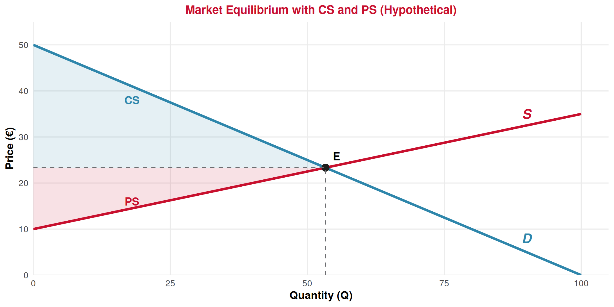
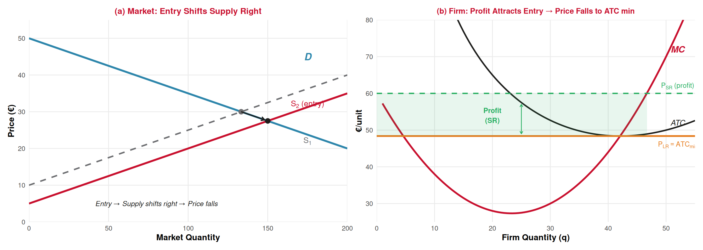

Producer Theory
Lecture 16: Short Run & Long Run Market Equilibrium
Paulo Fagandini
2026
Recap: Where We Are ⏪
Over Lectures 5–15, we built both sides of the market:
🛒 Demand side (L5–L9):
- Utility maximization → demand curve
- Market demand (horizontal sum)
- Consumer surplus
- Demand elasticity
🏭 Supply side (L10–L15):
- Cost structure → \(P = MC\) → supply curve
- Market supply (horizontal sum)
- Producer surplus
- Supply elasticity
. . .
🎯 Today: We put them together to find the market equilibrium — the price and quantity where buyers and sellers agree. This is the payoff of the entire course so far!
Short-Run Market Equilibrium
Where Supply Meets Demand 🤝
Market Equilibrium
The price and quantity at which quantity demanded equals quantity supplied:
\[Q_d(P^*) = Q_s(P^*)\]
At the equilibrium price \(P^*\), every buyer who wants to buy at that price can, and every seller who wants to sell can. No one is left unsatisfied.
Finding equilibrium algebraically (linear curves):
Given \(D: P = 50 - 0.5Q\) and \(S: P = 10 + 0.25Q\)
Set equal: \(50 - 0.5Q = 10 + 0.25Q\) → \(40 = 0.75Q\) → \(Q^* = 53.3\) → \(P^* = €23.3\)
👉 At this price, the quantity buyers want to buy exactly matches the quantity sellers want to sell.
Equilibrium Graphically 📊

What Happens Away from Equilibrium? ⚠️
Price too HIGH (\(P > P^*\)): Surplus (excess supply)
- \(Q_s > Q_d\) → goods pile up
- Sellers compete by lowering prices
- Price falls toward \(P^*\)
🏨 Tourism: Hotels with too many empty rooms in off-season → prices drop on Booking.com
Price too LOW (\(P < P^*\)): Shortage (excess demand)
- \(Q_d > Q_s\) → not enough goods
- Buyers compete by bidding prices up
- Price rises toward \(P^*\)
✈️ Tourism: Flight demand exceeds seats during holidays → prices rise, last-minute fares skyrocket
. . .
Self-Correcting Mechanism
Markets naturally tend toward equilibrium. Surpluses push prices down; shortages push prices up. This process continues until \(Q_d = Q_s\).
The Four Shift Rules 🔄
The Four Rules Summarized 📋
| Shift | Price | Quantity | Tourism Example |
|---|---|---|---|
| Demand ↑ (right) | ↑ | ↑ | Summer season → more tourists want hotels |
| Demand ↓ (left) | ↓ | ↓ | Pandemic → fewer tourists travel |
| Supply ↑ (right) | ↓ | ↑ | New technology → cheaper flights |
| Supply ↓ (left) | ↑ | ↓ | Fuel crisis → airline costs rise |
. . .
⚠️ When both curves shift simultaneously, the direction of one variable (P or Q) becomes ambiguous — it depends on the relative size of the shifts.
Example: Summer in the Algarve — demand shifts right (tourists) AND supply shifts right (seasonal workers). Quantity definitely rises, but price? Depends on which shift is bigger!
Welfare at Equilibrium ⭐
Total Economic Welfare
\[W = CS + PS\]
At the competitive equilibrium, total welfare is maximized. Any other price/quantity combination would reduce the combined surplus.
From our example (\(D: P = 50 - 0.5Q\), \(S: P = 10 + 0.25Q\), \(Q^* \approx 53.3\), \(P^* \approx 23.3\)):
\[CS = \frac{1}{2} \times 53.3 \times (50 - 23.3) = \frac{1}{2} \times 53.3 \times 26.7 \approx €711\]
\[PS = \frac{1}{2} \times 53.3 \times (23.3 - 10) = \frac{1}{2} \times 53.3 \times 13.3 \approx €356\]
\[W = 711 + 356 \approx €1{,}067\]
👉 Any tax, price ceiling, or price floor would reduce total welfare by creating deadweight loss.
Long-Run Market Equilibrium
The Short Run vs Long Run Revisited ⌛
🔒 Short-run equilibrium:
- Number of firms is fixed
- Firms may earn positive profit, zero profit, or losses
- Some factors of production are fixed
- This is what we’ve been analyzing!
🔓 Long-run equilibrium:
- Firms can enter or exit the market
- All factors of production are variable
- A special condition emerges: zero economic profit
- The market adjusts to a new, more fundamental equilibrium
. . .
The Key Long-Run Question
What happens over time when firms in a competitive market are earning positive profits? Or making losses?
The Entry and Exit Mechanism 🚪
If firms earn positive economic profit (\(P > ATC\)):
- ➡️ New firms are attracted → they enter the market
- 📈 Market supply shifts right (more firms = more supply)
- ⬇️ Equilibrium price falls
- 🔁 Process continues until \(P = ATC_{\min}\) → zero economic profit
If firms make losses (\(P < ATC\)):
- ⬅️ Some firms exit the market
- 📉 Market supply shifts left (fewer firms = less supply)
- ⬆️ Equilibrium price rises
- 🔁 Process continues until \(P = ATC_{\min}\) → zero economic profit
. . .
Long-Run Equilibrium Condition
In a perfectly competitive market: \(P = MC = ATC_{\min}\)
Firms produce at minimum average cost and earn zero economic profit.
Visualizing the Long-Run Adjustment 🎦

(a) Positive profits attract entry → supply shifts right → price falls. (b) Price falls until \(P = ATC_{\min}\) → zero economic profit → entry stops.
Zero Profit ≠ Failure! 💡
“Zero economic profit” sounds bad — but remember what it means:
Zero Economic Profit
The firm covers all costs, including the opportunity cost of the owner’s time and capital. The owner earns exactly what they could earn in their best alternative — a normal return.
\[\text{Economic Profit} = 0 \implies \text{Accounting Profit} = \text{Normal Return}\]
✅ What zero economic profit means:
- The business is sustainable
- The owner has no reason to leave
- No new firms want to enter
- The market is in long-run rest
❌ What it does NOT mean:
- The owner earns no money
- The business is failing
- The owner should close
- There are no accounting profits
The Long-Run Supply Curve 📈
If all firms have the same cost structure (constant-cost industry):
Long-Run Supply in a Constant-Cost Industry
The long-run supply curve is horizontal at \(P = ATC_{\min}\).
- If demand increases → new firms enter, supply shifts right, price returns to \(ATC_{\min}\)
- If demand decreases → firms exit, supply shifts left, price returns to \(ATC_{\min}\)
- Quantity adjusts, but price stays the same in the long run!
👉 In reality, costs may rise as the industry grows (increasing-cost industry → upward-sloping LR supply) or fall (decreasing-cost industry → downward-sloping LR supply). But the constant-cost case is the baseline.
Tourism: The long-run supply of standardized tour packages may be nearly horizontal — if tour operators can easily enter/exit and all face similar costs, the long-run price settles at the minimum cost of providing a tour.
Tourism Application
Tourism Markets: SR vs LR ✈️
What happened to Lisbon’s hotel market after the tourism boom (post-2015)?
1️⃣ Short run (2015–2017):
- Demand surged (low-cost airlines, Lisbon’s popularity)
- Supply was fixed (existing hotels)
- Result: prices skyrocketed, occupancy hit record highs
- Existing hotels earned large profits
- \(P >> ATC_{\min}\) → well above breakeven
2️⃣ Long run (2018–2024):
- Profits attracted entry: new hotels, Airbnb, hostels
- Supply shifted right significantly
- Result: prices stabilized (or even fell for some segments)
- Competition increased, profit margins narrowed
- Market moved toward \(P \approx ATC_{\min}\)
👉 This is the entry mechanism in action!
. . .
💡 The pandemic (2020–2021) reversed this: demand collapsed → firms exited → supply shifted left → the cycle restarted.
Summary 📝
Today’s Key Takeaways:
- SR equilibrium: where \(Q_d = Q_s\). Price too high → surplus (price falls). Price too low → shortage (price rises).
- Four shift rules: D↑ → P↑Q↑; D↓ → P↓Q↓; S↑ → P↓Q↑; S↓ → P↑Q↓
- Simultaneous shifts: direction of one variable is ambiguous — depends on magnitude
- Total welfare = CS + PS, maximized at competitive equilibrium
- LR equilibrium: entry (if profit > 0) and exit (if profit < 0) drive \(P → ATC_{\min}\)
- Zero economic profit in the LR = normal return = sustainable. It’s not failure!
- LR supply (constant-cost): horizontal at \(P = ATC_{\min}\)
This completes the Producer Theory block! 🎉
Lectures 10–16: Costs → Profit max → Shutdown → Supply rule → PS & Market supply → Elasticity → Equilibrium
Next (Lecture 17, April 17): Introduction to Game Theory — Prisoner’s Dilemma & Nash Equilibrium ♟️
Exercises
Practice Time! ✏️
Market equilibrium, shifts, and long-run adjustment.
Exercise 1: Multiple Choice
Question: In the Algarve hotel market, a new low-cost airline begins flying to Faro from Northern Europe. At the same time, the Portuguese government introduces a new tourist tax on hotel stays. What is the effect on the equilibrium quantity of hotel room-nights?
A. Quantity definitely increases
B. Quantity definitely decreases
C. Quantity definitely stays the same
D. The effect on quantity is ambiguous
Answer: D
The new airline increases demand (shift right → Q↑). The tourist tax increases costs (supply shifts left → Q↓). Since one shift pushes Q up and the other pushes Q down, the net effect is ambiguous — it depends on which shift is larger. However, we can say that price definitely rises (both shifts push P upward).
Exercise 2: Multiple Choice
Question: In a perfectly competitive market, if firms are currently earning positive economic profits in the short run, what will happen in the long run?
A. The government will impose a price ceiling
B. New firms enter, supply shifts right, price falls until profit = 0
C. Existing firms raise prices to increase profits further
D. Demand shifts left as consumers find substitutes
Answer: B
Positive profit → entry → supply shifts right → equilibrium price falls → profit is competed away until \(P = ATC_{\min}\) → zero economic profit. This is the self-correcting mechanism of competitive markets. No government action needed (A), firms can’t set prices (C — they’re price takers!), and the question is about the supply side, not demand (D).
Exercise 3: Open Question ✍️
The market for guided walking tours in Sintra has the following curves:
- Demand: \(P = 40 - 0.2Q\) (€ per tour)
- Short-run supply: \(P = 8 + 0.12Q\) (€ per tour)
All firms are identical with \(ATC_{\min} = €20\).
a) Find the short-run equilibrium price and quantity.
b) Calculate CS, PS, and total welfare at the SR equilibrium.
c) Are firms making positive economic profit, zero profit, or losses? How do you know?
d) Describe what will happen in the long run. What will the new equilibrium price be? Will the number of firms increase or decrease?
e) A surge in tourist arrivals shifts demand to \(P = 52 - 0.2Q\). Find the new SR equilibrium. Are firms now earning profits or losses?
f) After the demand surge, describe the long-run adjustment process. What is the final LR equilibrium price?
Exercise 3: Solution — Parts a & b
a) SR equilibrium: \(40 - 0.2Q = 8 + 0.12Q\)
\(32 = 0.32Q\) → \(Q^* = 100\) tours, \(P^* = 40 - 0.2(100) = €20\)
b) At (\(Q^* = 100\), \(P^* = €20\)):
\[CS = \frac{1}{2} \times 100 \times (40 - 20) = \frac{1}{2} \times 100 \times 20 = €1{,}000\]
\[PS = \frac{1}{2} \times 100 \times (20 - 8) = \frac{1}{2} \times 100 \times 12 = €600\]
\[W = CS + PS = 1{,}000 + 600 = €1{,}600\]
Exercise 3: Solution — Parts c & d
c) \(P^* = €20 = ATC_{\min} = €20\)
Since price equals minimum ATC, firms are earning zero economic profit. The market is already at its long-run equilibrium! ✅
d) Since profit is already zero, there is no incentive for firms to enter or exit. The long-run equilibrium price stays at €20. The number of firms remains the same.
👉 This is a special case where SR equilibrium coincides with LR equilibrium — the market is at rest.
Exercise 3: Solution — Parts e & f
e) New demand: \(P = 52 - 0.2Q\)
New SR equilibrium: \(52 - 0.2Q = 8 + 0.12Q\) → \(44 = 0.32Q\) → \(Q^* = 137.5\), \(P^* = 52 - 0.2(137.5) = €24.50\)
Since \(P^* = €24.50 > ATC_{\min} = €20\): firms are now earning positive economic profit!
Profit per firm = \((24.50 - 20) \times q_i = €4.50 \times q_i > 0\) (exact firm quantity depends on individual MC).
f) Long-run adjustment:
- Positive profits attract new firms → they enter the market
- Supply shifts right (more firms)
- Equilibrium price falls from €24.50 toward \(ATC_{\min}\)
- Entry continues until \(P = ATC_{\min} = €20\)
Final LR equilibrium: \(P_{LR} = €20\). At this price with the new demand: \(Q = \frac{52 - 20}{0.2} = 160\) tours.
The market serves more tours (160 vs 100 originally) at the same price (€20). The adjustment came entirely through more firms entering, not through higher prices. ✅
Next Lecture
April 17, 2026: Introduction to Game Theory — Prisoner’s Dilemma & Nash Equilibrium ♟️
A brand new topic — what happens when firms are not price takers and interact strategically?
👋 This completes the Producer Theory block! Time to move beyond perfect competition.
Thank You!
Questions? 🙋
📧 paulo.fagandini@ext.universidadeeuropeia.pt
Next class: Friday, April 17, 2026

Economics of Tourism | Lecture 16